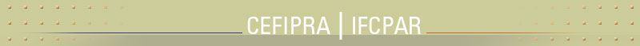
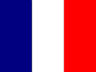
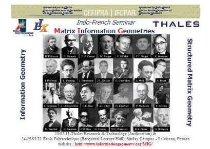
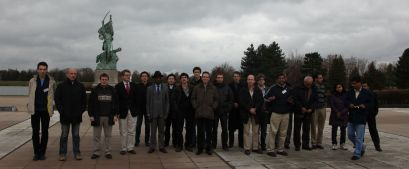
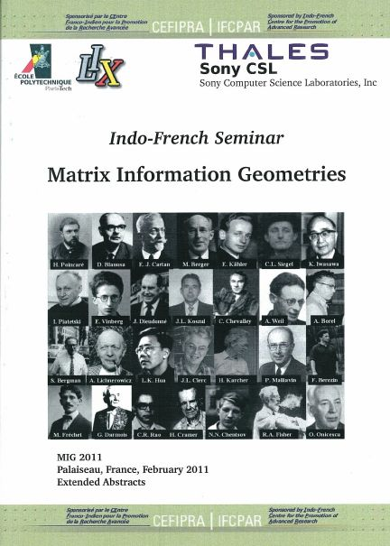
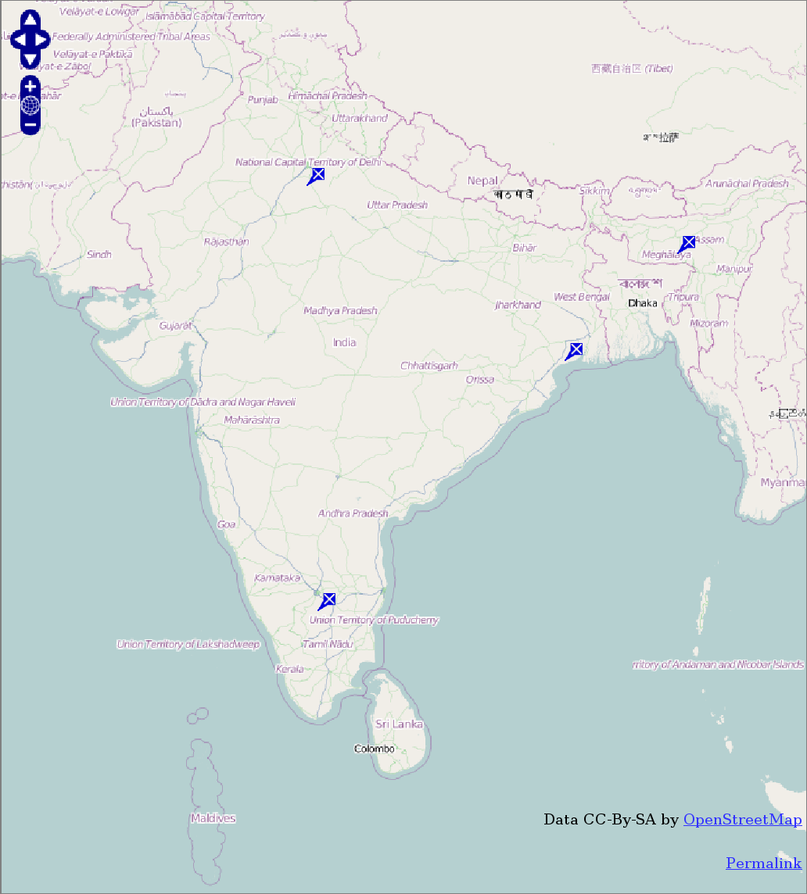
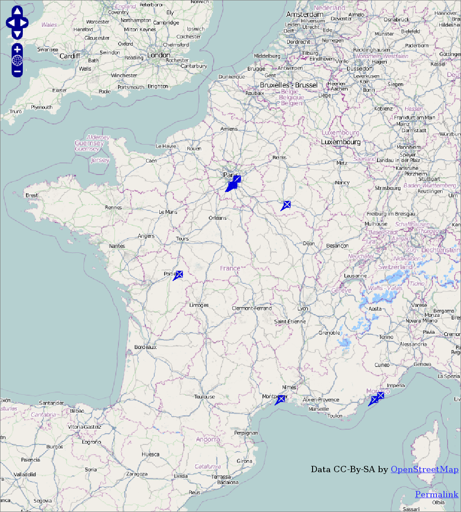
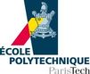

|
|
INDO-FRENCH WORKSHOP
Matrix Information Geometries (MIG)
Applications in Sensor and Cognitive Systems Engineering
23rd February 2011 (Thales TRT)
24th-25th February 2011 (Ecole Polytechnique)
Thank you to all participants!
(August 2012)
|

|
VENUE
INFORMATION
|

Poster
|
PROGRAM
|
|
SLIDES
|

|
PHOTOS
|
Rationale
Matrix and Tensor Data Processing is a breakthrough in the domain of signal,
image and information processing with many potential applications in sensor
and cognitive systems engineering. The participants are experts in the areas of
theoretical mathematics or engineering sciences.
Topics:
Information Geometry, Differential Geometry of structured Matrix, Positive Definite Matrix, Covariance Matrix, Application for Sensors (EM, EO, Acoustic,…),
Applications for Cognitive systems (Data Mining, Data analysis,…)
CEFIPRA
Sponsored by CEFIPRA/IFCPAR :
Indo-French Centre for the Promotion of Advanced Research
Proceedings and Book
Proceedings booklet

A Springer book is currently in final preparation stage: Matrix Information Geometry (450 pages), slated for May 2012.
(Contributed chapters are peer-reviewed).
Please send 2-page LaTeX abtract format (preferably using the LNCS style)
by February 10 to schwander@lix.polytechnique.fr (subject: MIG)
Full length paper submission shall be considered after the workshop for an edited book (confirmation pending)
Social event (Wed. 23rd Feb. 8:30pm)
Downtown restaurant "Au cadet de Gascogne" (place du Tertre in Montmartre)
Agrandir le plan
Co-chairs
- F. Barbaresco (Thales, France)
- A. K. Mishra (Indian Institute of Technology Guwahati, India)
- F. Nielsen (Ecole Polytechnique, France/Sony Computer Science Laboratories, Inc, Japan)
Organizing committee
- F. Barbaresco (Thales, France)
- A. K. Mishra (Indian Institute of Technology Guwahati, India)
- F. Nielsen (Ecole Polytechnique, France/Sony Computer Science Laboratories, Inc, Japan)
- O. Schwander (Ecole Polytechnique, France)
Confirmed participants
An interactive map of participant locations.

India
|

France, excluding Martinique
|
- Barbaresco Frederic (Thales Air Systems)
- Le Chevalier François (Thales Air Operations)
- Angulo Jesus (Ecole des Mines de Paris)
- Zhongxun Liu (Thales Air Systems)
- Cont Arshia (IRCAM)
- Dessein Arnaud (IRCAM)
- Nielsen Frank (Ecole Polytechnique/Sony Computer Science Laboratories)
- Schwander Olivier (Ecole Polytechnique)
- Ovarlez Jean-Philippe (ONERA)
- Nock Richard (Ceregmia-Martinique)
- Boyom Michel (Université de Montpellier)
- Le Yang (Université de Poitiers)
- Arnaudon Marc (Université de Poitiers)
- Bonnabel Silvere (Ecole des Mines de Paris)
- Pennec Xavier (INRIA sophia)
- Pascal Frederic (SUPELEC)
- Formont Pierre (SUPELEC)
- Richard Cedric (Université de Nice Sophia-Antipolis)
- Snoussi Hichem (Université Technologique de Troyes)
- Byande Paul (Université de Montpellier)
- Amit Kumar Mishra (Indian Institute of Technology Guwahati)
- Rajendra Bhatia (Indian Statistical Institute, New Delhi)
- Trinath Kar (The BuG Design)
- Ganapathy Viswanath (Honeywell Technologies, Bangalore)
- Priyanka Grover (Indian Statistical Institute, Delhi)
- Sukanta Pati (Indian Institute of Technology Guwahati)
- Manas Kamal Bhuyan. (Indian Institute of Technology Guwahati)
- Aurobinda Routray (Indian Institute of Technology, Kharagpur)
- Tapan Pradhan (Indian Institute of Technology, Kharagpur)
Links
Sponsoring institutions


CEFIPRA/Ecole Polytechnique/LIX/Sony Computer Science Laboratories/Thales
<
CEREGMIA, UAG
Agence Nationale de la Recherche: ANR-07-BLAN-328 (GAIA: Computational Information Geometry and its Applications)
Frank Nielsen, January 2011, last updated February 2012.